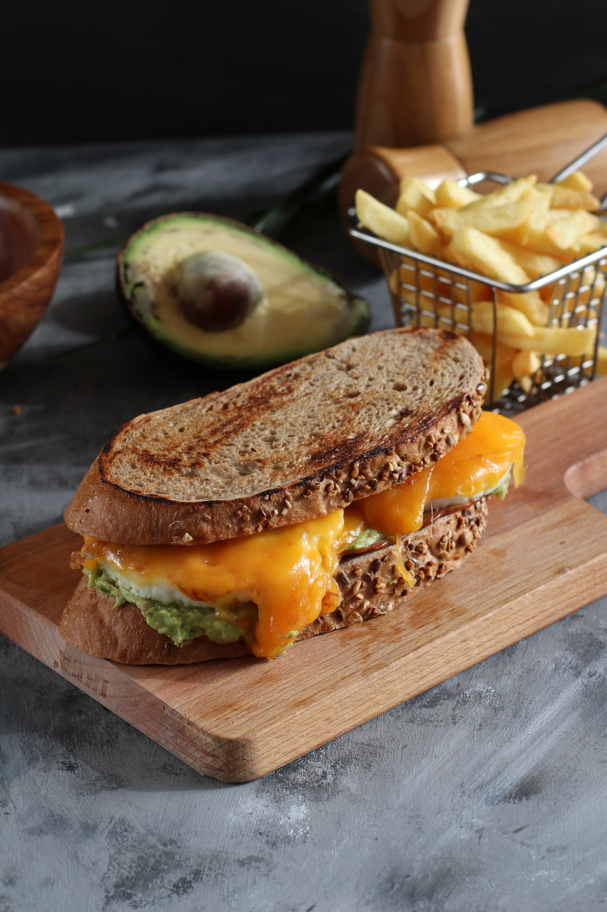
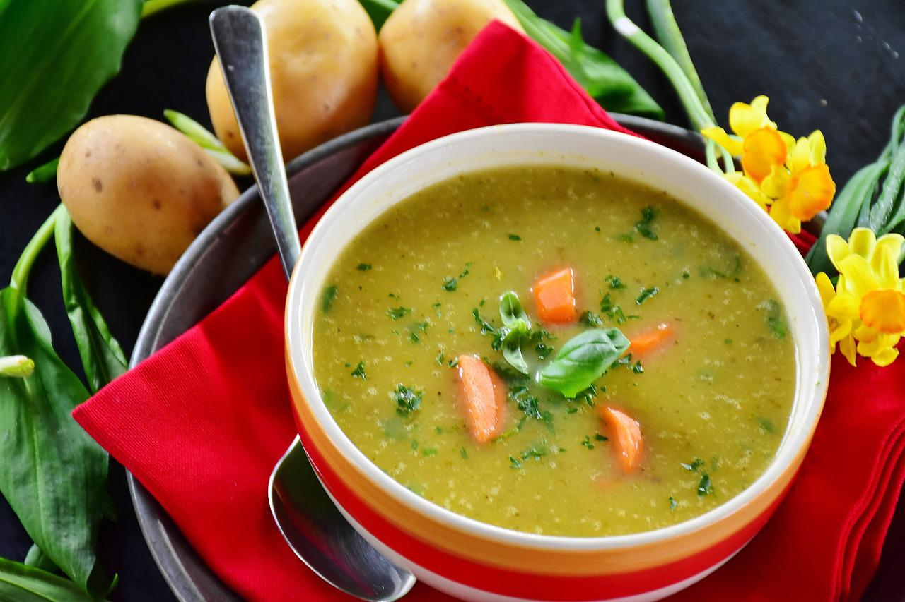
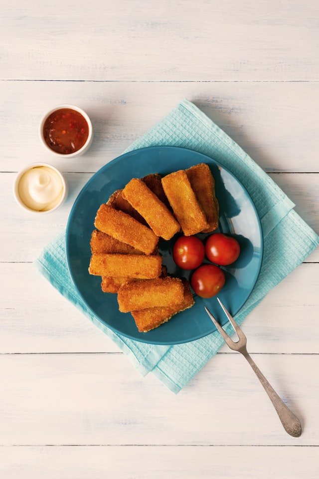
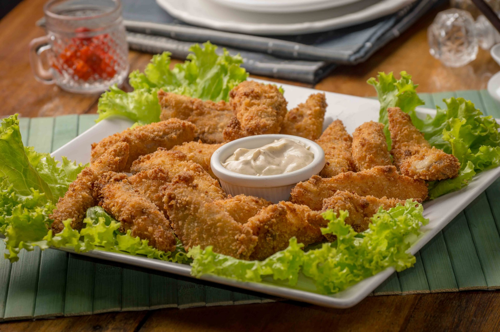
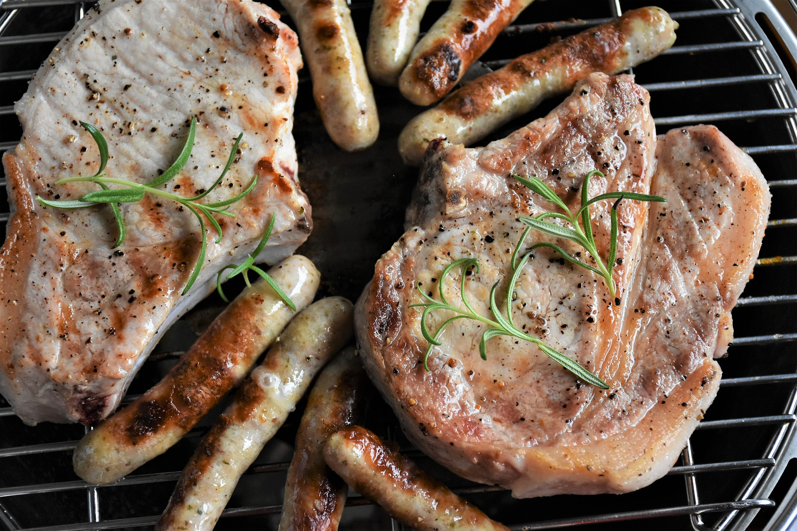
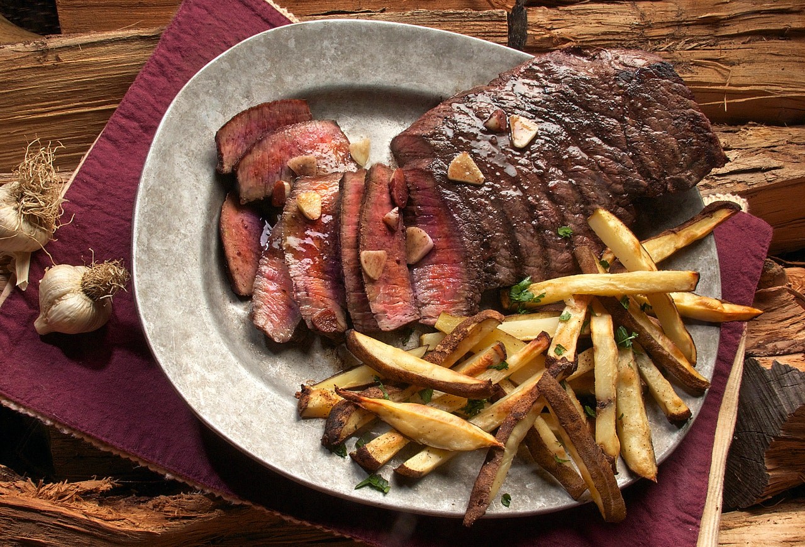
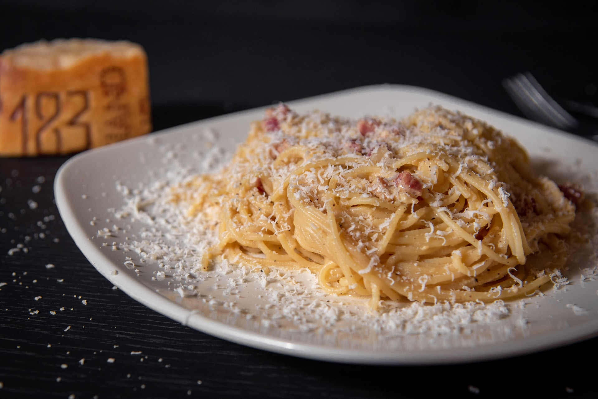
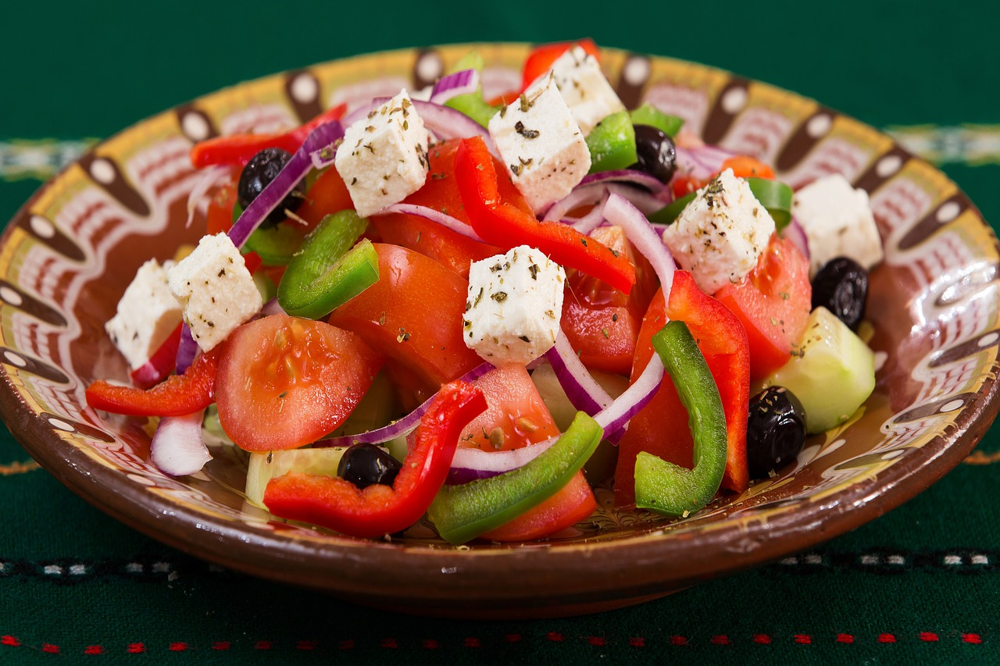

Jídelní lístek
Předkrmy

| Pikantní křídla | 79 |
| 8ks | grilované kuřecí křidýlka s jemnou medovou pikantní omáčkou |
| Toast "THALIE" | 69 |
| toast, ananas, smetana, pražská šunka, eidamský sýr (alergeny 1, 7) |
| Toast "PIKANT" | 69 |
| topinka, vepřová kýta, zelenina, kečup, chilli, eidamský sýr (alergeny 1, 7) |
| Masový talířek, zeleninová obloha, křen, hořčice | 149 |
| šunka, angl, slanina, krkovička, uzený jazyk |
Polévky

| Hovězí vývar s nudlemi, masem a zeleninou | 45 |
| Staročeská česnečka s krutóny, sýrem a šunkou | 45 |
| Frankfurtská s párkem | 45 |
Bezmasá jídla

| Smažený sýr eidam | 135 |
| 120g | s bramborem/americké brambory/hranolky/krokety + domací tatarka |
| SMAŽÁK SPECIÁL | 185 |
| 160g | smažený čedar s bramborem/americké brambory/hranolky/krokety + domací tatarka |
| Borůvkové kynuté knedlíky | 115 |
| 250g | domácí šlehačka a čokoláda |
| Jahodové tvarohové knedlíky | 125 |
| 180g | domácí šlehačka a čokoláda |
Kuřecí

| Kuřecí RIZOTO se zeleninou | 125 |
| 250g | sýr, okurka a červená řepa |
| Italské GNOCCHI | 125 |
| 250g | kuřecí maso, listový špenát, česnek a sýr |
| Pikantní kuřecí steak | 220 |
| 150g | pikantní rajčatová omáčka, anglická slanina a mozzarella |
| Smažený kuřecí řízek | 189 |
| 150g | s bramborem/americké brambory/hranolky/krokety |
| Kuřecí kapsička | 189 |
| 150g | plněná angl. slaninou, mozzarelou, vajíčkem a bylinkami |
Vepřové

| Smažená vepřová kapsa „ mistra Salieriho“ | 169 |
| 150g | vepřová kotleta, salám, sýr, žampióny |
| Special - Maďarská panenka s pepřovou omáčkou | 195 |
| 200g | špikovaná čabajskou klobáskou a opékaná na grilu |
| Katův šleh | 209 |
| 300g | vepřové nudličky, cibule a paprika, bramboráčky |
| Medvědí tlapa | 209 |
| 300g | vepřová krkovice, hořčice, křen |
Hovězí

| SVÍČKOVÁ NA SMETANĚ, houskový knedlík | 189 |
| 150g | brusinky, domácí šlehačka |
| Hovězí nudličky Stroganov | 219 |
| 150g | hovězí svíčková, žampióny, steril. okurek, kečup, smetana |
| Special - BIFTEK „Kmotr“ | 219 |
| 339g | grilovaná hovězí svíčková s opečenou anglickou slaninou, sázeným vejcem, česnekovou omáčkou |
Pizza
.jpg)
| Margharita | 139 |
| mozzarela, bazalka, rajčata |
| Prosciutto | 159 |
| šunka, mozzarela |
| Mafia | 169 |
| salám, kukuřice, cibule, mozzarella |
| Quatro formaggi | 179 |
| niva, hermelín, eidam, mozzarella |
| Hawaii | 179 |
| šunka, ananas, kari, mozzarella |
| Picant | 179 |
| mozzarella, pikantní salám, feferonky |
| Al Capone | 189 |
| slanina, uzený sýr, cibule, vejce, mozzarella |
| Polo | 189 |
| kuřecí maso, rajčata, bazalka, mozzarella |
| Mirtilli polo | 199 |
| smetana, kuřecí maso, brusinky, hermelín, mozzarella |
| Grande David | 199 |
| smetana, slanina, niva, čedar, mozzarella, červená cibule |
Těstoviny

| Špagety s boloňskou omáčkou, rajčaty, česnekem a bazalkou | 145 |
| 300g |
| Špagety Toskana | 145 |
| 300g | kousky kuřecího masa, cibulka, žampión, pórek, smetana, parmezán |
| Špagety Carbonara | 145 |
| 300g | parmská šunka, česnek, smetana, žloutek, parmezán |
| Zapečené těstoviny s kuřecím masem, špenátem a sýrem | 145 |
| 300g |
| Zapečené těstoviny s anglickou slaninou, špenátem a nivou | 145 |
| 300g |
Saláty

| Šopský salát | 119 |
| 200g | míchaná zelenina - rajče, okurka, paprika, 30 g bal. sýr, toustový chléb |
| Řecký salát | 135 |
| 200g | rajče, okurka, paprika, vař. vejce, bal. sýr, olivový olej, bazalka, toust. chléb |
| Zeleninový salát Marco Polo | 199 |
| 300g | gril. losos, cibule, žampiony, rajčata, okurek, paprika, ledový salát, toust. chléb, oliv. olej |
| Česneková nebo bylinková bageta | 35 |
| 1ks | doporučujeme k salátům čerstvou rozpečenou bagetu |